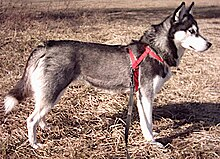

Siberian Huskies originiated in Northeast Asia where they are bred by the Chukchi people of Siberia for sled pulling and companionship. It is an active, energetic, resilient breed whose ancestors lived in the extreme cold and harsh environment of the Siberian Arctic.
